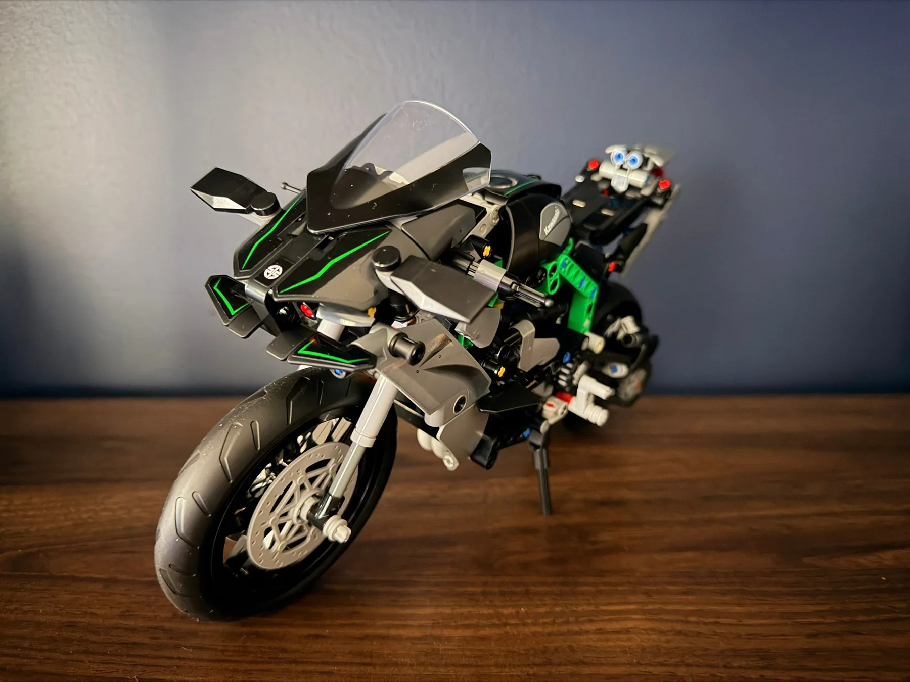
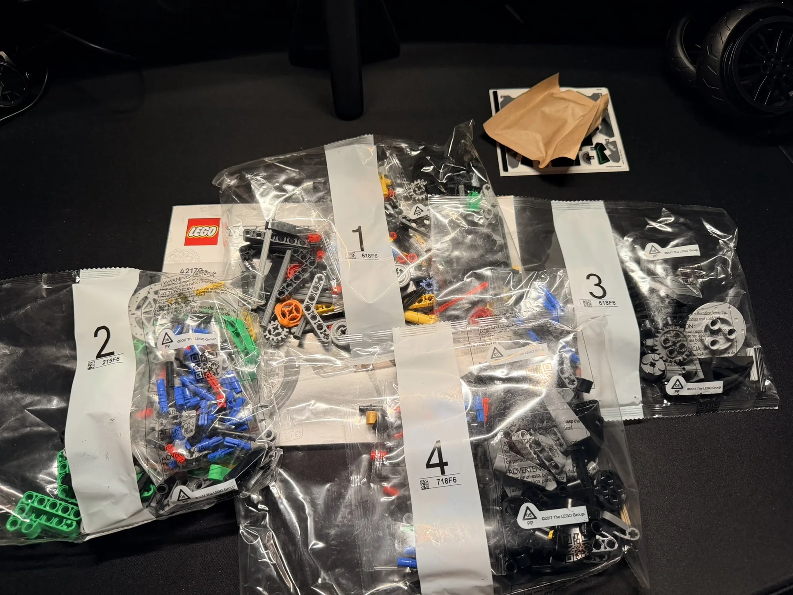
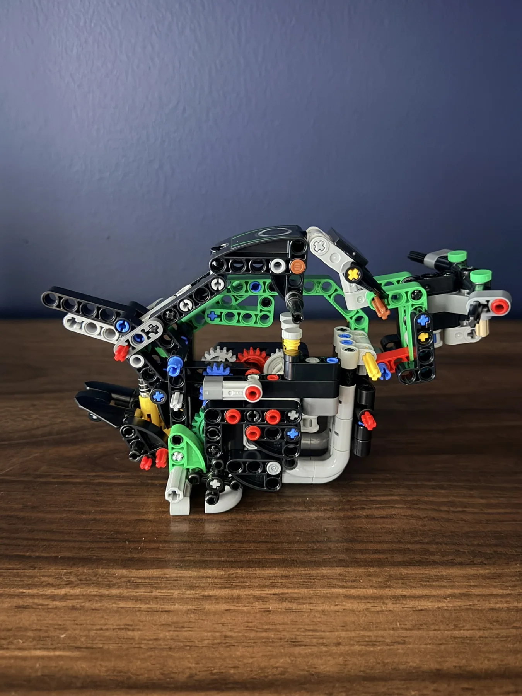
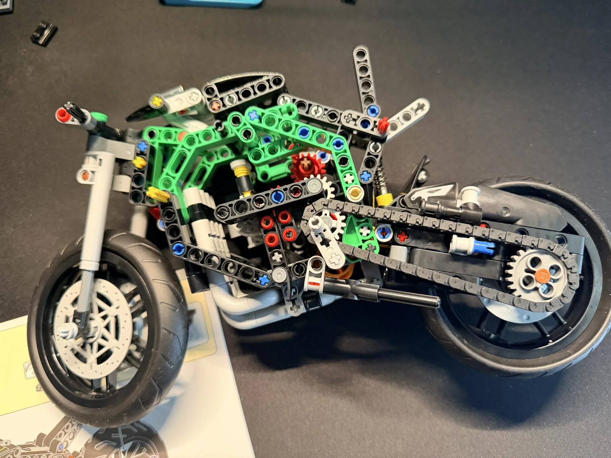
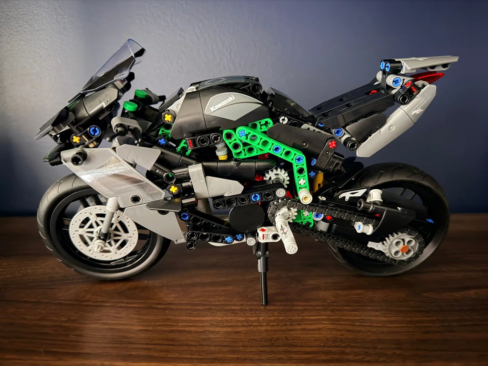
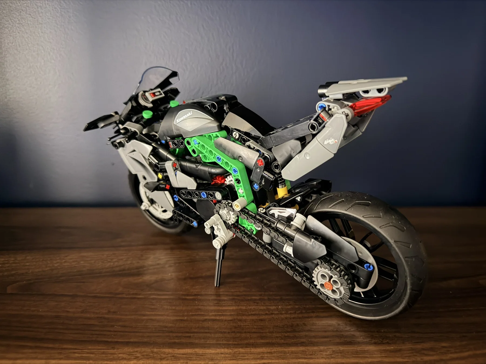
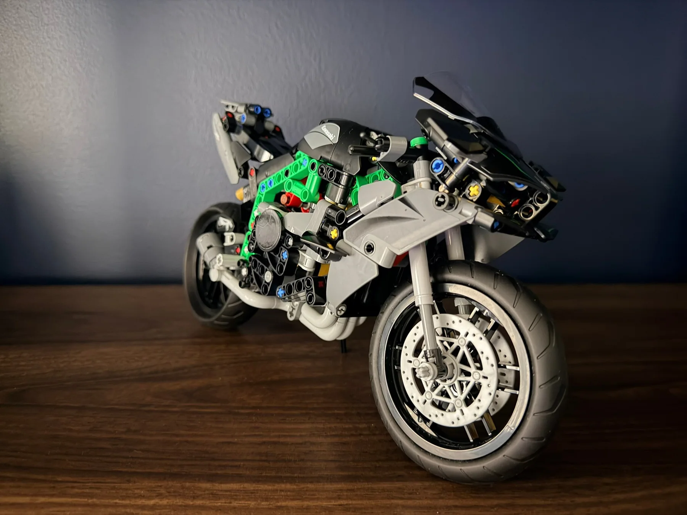
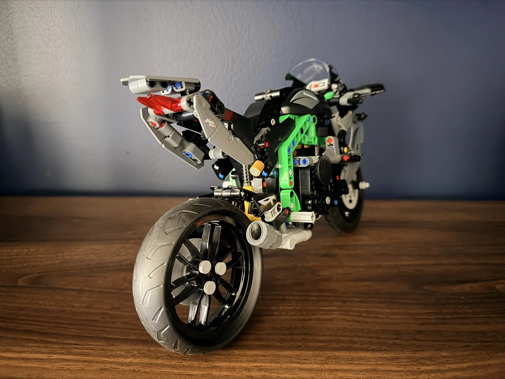
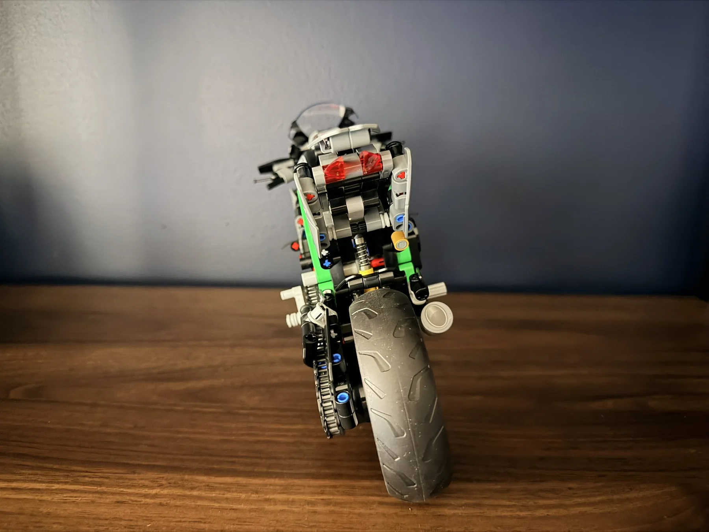
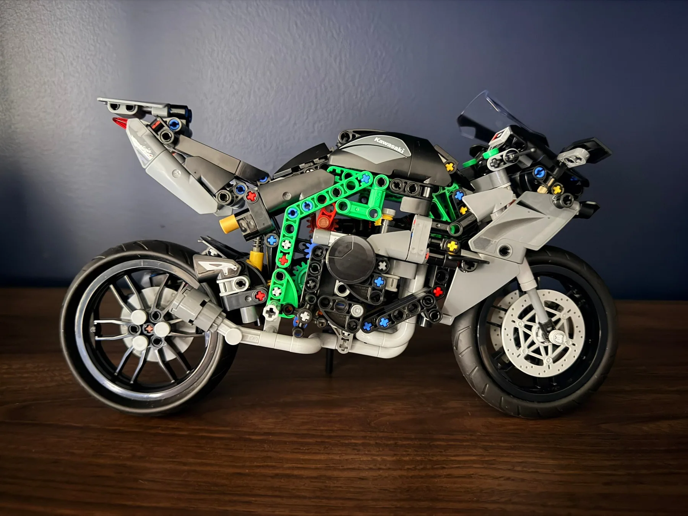

LEGO Technic Kawasaki Ninja H2R
A striking black, gray and Kawasaki-green motorcycle build, from the exposed Technic frame and chain drive to the finished Ninja H2R.

From the frame to the finished Ninja.
The Kawasaki Ninja H2R is a great example of why Technic motorcycles are so interesting to build. Before the body panels go on, the structure is open enough to see the frame, gears, suspension and chain drive taking shape.
The finished bike has a very different presence: sharp black and gray bodywork, bright green frame elements and a recognizable sport-bike silhouette. These photos capture the transformation from loose bags and exposed mechanics to a model ready for display.
Opening the bags.
Four numbered building stages set the foundation for the motorcycle. The early work focuses on the internal structure that will support the wheels, engine details and body panels.

The green frame takes shape.
With the fairings still off, the green frame and internal gear assemblies are front and center. This is the stage where the bike's engineering becomes easier to appreciate.


The Kawasaki look comes together.
The final body panels, windscreen and Kawasaki details give the model its finished identity. The exposed green frame remains visible beneath the gray and black fairings, making the mechanical structure part of the display.






A bike that looks as good as its mechanics.
What stands out about this build is how much of the internal structure remains part of the finished look. The Kawasaki-green frame, chain drive and compact bodywork give the Ninja H2R a distinctive style, whether viewed from the side, front or rear.
← Back to Builds